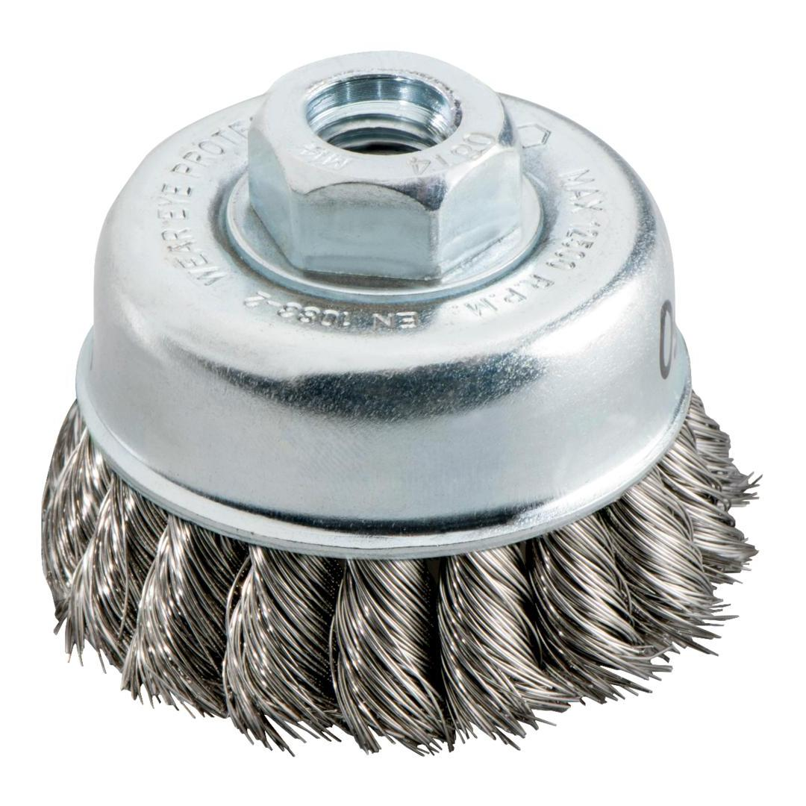

METABO | WIRE WHEEL BRUSH KNOTTED 80MM
623710000


Product Description
- For universal use in metal processing, e.g. for cleaning, deburring, purging, removing rust, smoothing welding seams and points, stripping slag, scales and old paint
- For processing large areas, weld seams etc.
- Edging type: twisted steel wire